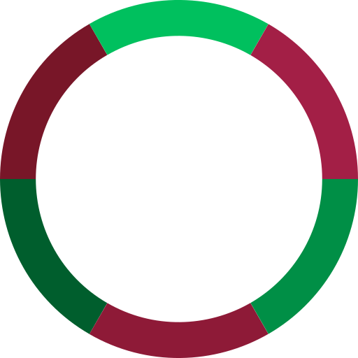
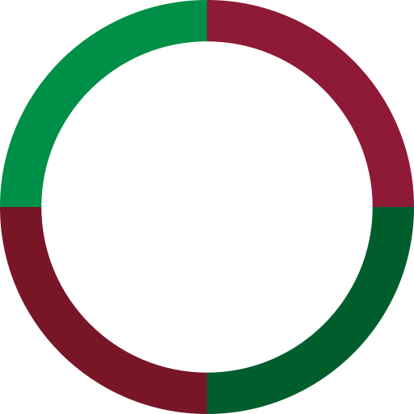
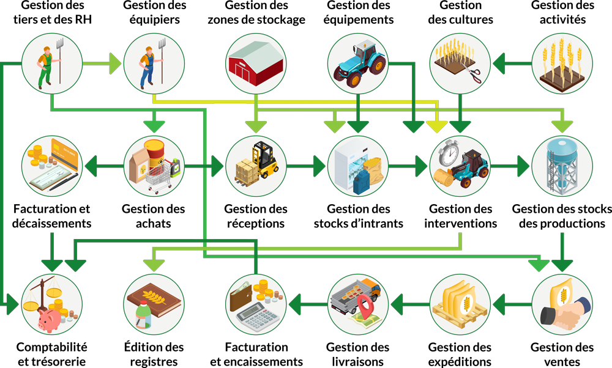

Logiciels de gestion d'exploitation agricole et viticole
Logiciels de gestion
d'exploitation agricole et viticole
Guide de prise en main
Ce guide a pour but d'aider l'utilisateur à configurer correctement les applications développées par Ekylibre pour gérer son exploitation agricole ou viticole. Il rassemble les informations et les procédures essentielles à connaître pour maîtriser les fonctionnalités disponibles dans les différents modules de la solution. Cette documentation en ligne a été mise à jour le 27 avril 2023.

Disposant d'un socle technique commun, de nombreuses fonctionnalités abordées dans cette documentation sont disponibles dans les différentes offres proposées par Ekylibre :
Notez que depuis le 1er mai 2023, la souscription à un abonnement Ekylibre SAS ou Ekylibre Serveur donne accès à toutes les fonctionnalités avancées et connexions partenaires.
Guide de prise en main • Interface de la documentation
Interface de la documentation
Pour naviguer entre les différents chapitres, utilisez le MENU PRINCIPAL symbolisé par l'icôneen haut à gauche des pages.
Selon la résolution de votre écran (une largeur minimale de 768 pixels est conseillée), des liens sont également disponibles dans l'en-tête et le pied des pages web ainsi qu'à la fin de chaque chapitre.
Le fil d'ariane situé en haut de la page affiche le nom de la section de la documentation que vous êtes en train de lire pour mieux vous repérez dans un chapitre (uniquement sur les écrans dont la résolution est de 768 pixels minimum).
Au survol de la plupart des captures d'écran, le changement du curseur en loupevous indique qu'un agrandissement est disponible pour disposer d'un affichage plus confortable (si la taille de l'écran le permet).
Plusieurs conseils et recommandations sont également à votre disposition. Ces remarques sont classées selon trois types identifiables grâce aux icônes suivantes :
La documentation est consultable au format PDF à partir de ce lien ou du bouton situé en bas à gauche des pages (le temps de téléchargement du fichier dans votre navigateur dépend de la vitesse de votre connexion internet).
Nous vous conseillons cependant de vous référer en priorité à la version web qui est actualisée plus régulièrement :
Lorsque des informations complémentaires sont plus particulièrement destinées aux utilisateurs de la solution Ekyviti, elles sont signalées et disponibles en dépliant un accordéon de ce type :
Guide de prise en main • Sommaire
Au début de chaque chapitre, un sommaire précise les principales fonctionnalités ou tâches qui sont abordées dans celui-ci, avec des liens vers les explications délivrées.
L'intitulé des chapitres composant le sommaire est cliquable afin de déployer leur contenu et vous permettre d'être redirigé(e) facilement vers les différentes sections de la documentation :
Sommaire
-
1Introduction
-
2Parcellaire
-
3Exploitation
-
4Interface et accès
-
5Comptabilité
-
6Achats
-
7Ventes
-
8Stocks, tiers et RH
-
9Production
-
10Outils
-
11Performance
-
12Ekyviti


Guide de prise en main • Échelle de difficulté
Échelle de difficulté
Certaines procédures étant plus ou moins difficiles et fastidieuses à mettre en œuvre (prérequis, imports et extractions de données), une jauge vous informe du niveau de complexité que vous pouvez rencontrer ou vous prévient lorsqu'une étape préparatoire est nécessaire pour générer des fichiers compatibles avec l'application.
Guide de prise en main • Réussir ses premiers pas
Réussir ses premiers pas dans Ekyagri | Ekyviti
Glissez pour parcourir le schéma

Interactions entre les principales fonctionnalités d'Ekyagri | Ekyviti (offres Gestion)
Cette introduction ne saurait remplacer la lecture de ce guide mais voici quelques conseils pour ordonner vos actions et réussir vos premiers pas dans l'application, même si l'interface peut sembler complexe de prime abord, compte tenu de la multitude de fonctionnalités disponibles.
Une fois arrivé dans l'assistant de démarrage, prenez soin de bien renseigner tous les champs signalés obligatoires concernant votre exploitation.
Utilisez de préférence les données TelePAC ou le RPG pour créer vos zones cultivables et sélectionner vos activités. Dessinez à la main vos bâtiments et vos aires de stockage, indispensables pour réaliser ultérieurement la réception des commandes.
Il n'est pas indispensable de renseigner votre parc d'équipements agricoles dans l'assistant de démarrage mais il conviendra de le faire plus tard pour saisir correctement vos interventions.
Une fois dans l'application, paramétrez successivement les données de votre exploitation, certains éléments comptables (plan de comptes, exercice comptable, TVA) et vos informations bancaires.
Entrez vos principaux tiers (personnel, clients et fournisseurs), vos équipements et enregistrez vos stocks initiaux. Importez et créez les articles dont vous avez besoin (on vous explique pourquoi et comment faire).
Ajoutez les équipiers qui pourront être associés aux interventions (vous-même et les autres conducteurs ou opérateurs).
Définissez de nouvelles activités pour la campagne en cours, réalisez votre assolement et commencez la saisie ou la planification d'interventions. Enregistrez vos achats (intrants, carburant, équipements, prestations de service) ainsi que les ventes de vos produits de récolte.

Vous avez souscrit à l'offre Ekylibre SAAS et vous souhaitez commencer son utilisation dans des conditions optimales ? contactez-nous pour établir un devis correspondant à vos besoins et définir le programme initial d'une formation personnalisée.
Guide de prise en main • À propos d'Ekylibre
Restez en contact avec nous
Ekylibre est membre de la French Tech Bordeaux
Ekylibre est membre fondateur de La Ferme Digitale
Ekyagri et Ekyviti sont des applications conçues et développées en France
Passez au chapitre suivant de ce guide.
Documentation rédigée et illustrée avec et quelques à Bègles (33) en Nouvelle-Aquitaine.